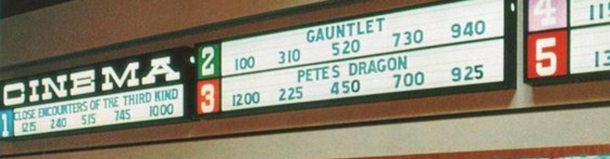
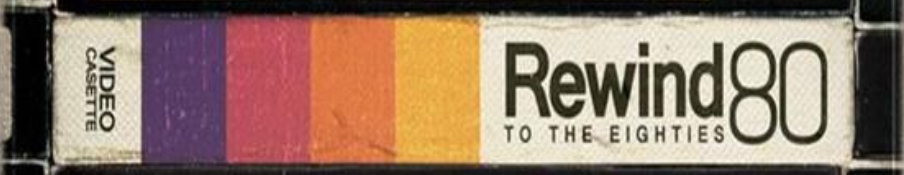

Página Inicial
A capacidade de editar tornou-se uma habilidade fundamental em um mundo cada vez mais digital. Seja para fins profissionais, educacionais ou pessoais, saber editar é um diferencial valioso que contribui para uma comunicação eficaz e uma expressão criativa impactante.
Estilo Cinematográfico

Características
- - Color Grading: Uso de técnicas de correção de cor para criar atmosferas específicas. Pode incluir tons frios para cenas noturnas ou tons quentes para criar uma sensação acolhedora;
-
- Contraste Acentuado: Destaca as diferenças entre áreas claras e escuras para criar uma estética mais dramática e impactante;
-
- Desfoque Controlado: Utilização de desfoque seletivo para direcionar a atenção do espectador para elementos específicos na cena;
-
Aspect Ratio Cinemascope: Uso de formatos widescreen para dar uma aparência mais cinematográfica;11
Estilo Vintage ou Retrô

Características
- - Tonificação Específica: Aplicação de tons específicos para simular a estética de diferentes épocas, como sépia para um visual antigo;
-
- Vinhetas: Adição de sombras nas bordas da imagem para criar um efeito vintage;
-
- Texturas e Grãos: Inclusão de texturas e grãos para simular a aparência de fotos antigas;
-
Leves Desfoques: Adição de desfoques suaves para suavizar a imagem.
Estilo Minimalista ou Clean
Características
- - Cores Sólidas: Uso de cores sólidas e equilibradas para criar uma estética limpa e moderna;
-
- Contraste Moderado: Contraste controlado para manter uma aparência suave e equilibrada;
-
- Simplicidade na Composição: Foco em composições simples e elementos gráficos claros;
-
Filtros Leves: Uso de filtros sutis para aprimorar a nitidez e a clareza da imagem.